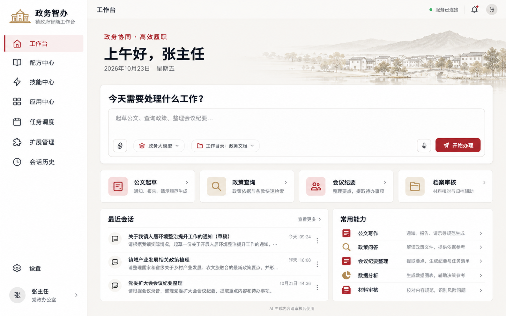

庄重 · 克制的政务配色
暖白保证阅读舒适度，政务红用于主操作，金色用于少量装饰。
每个条目都有独立图标
配方、技能、应用、扩展以主题图标识别；后续统一实现卡片、状态和兜底图标。
头像与政务账户
设置呈现姓名、部门、单位和登录状态；人员身份认证与模型凭据分别管理。
GOOSE · 镇政府定制分支
庄重有序，清晰易用。面向镇政府日常办公的智能工作台。

暖白保证阅读舒适度，政务红用于主操作，金色用于少量装饰。
配方、技能、应用、扩展以主题图标识别；后续统一实现卡片、状态和兜底图标。
设置呈现姓名、部门、单位和登录状态；人员身份认证与模型凭据分别管理。